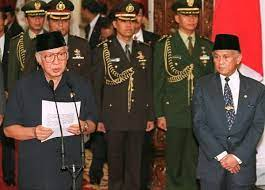
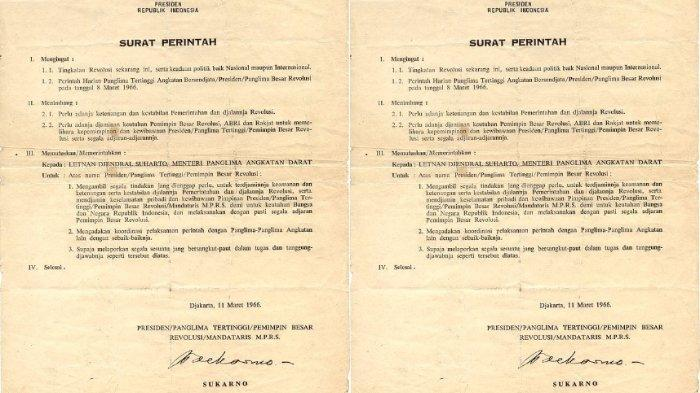

|
1. MAKNA ORDE BARU

Orde Baru merujuk pada masa pemerintahan Presiden Soeharto di Indonesia. Awal dari periode Orde
Baru dimulai setelah dikeluarkannya surat perintah yang berlaku selama kurang lebih 32 tahun pada 11
Maret 1966-1988. Penunjukan Soeharto sebagai Presiden Indonesia juga menandai dimulainya era Orde Baru.
Selama masa Orde Baru, sistem pemerintahan masih menggunakan pendekatan presidensial di mana keputusan
eksekutif berada di tangan presiden, dan bentuk pemerintahannya adalah republik. Dasar konstitusi negara
Indonesia tetap UUD 1945.
Pada masa ini, terjadi kemajuan dalam demokrasi di Indonesia, seperti penurunan inflasi dan stabilisasi
mata uang Indonesia. Meskipun mengalami perkembangan tersebut, kekuasaan penuh tetap berada di tangan
presiden, yang pada akhirnya menyebabkan runtuhnya era Orde Baru karena krisis moneter pada tahun 1997.
Setelah krisis tersebut, kondisi ekonomi Indonesia memburuk, menciptakan dampak yang juga dirasakan oleh banyak
negara lain. Situasi ini meningkatkan tingkat korupsi, kolusi, serta nepotisme (KKN), sementara angka kemiskinan
juga mengalami peningkatan.
2. CIRI-CIRI ORDE BARU
✿ Kuatnya Pengaruh Militer atau Dwifungsi ABRI
Ciri utama dari pemerintahan pada masa Orde Baru adalah dominannya pengaruh militer dan ABRI. Dinamika ini sudah
tampak sejak masa Orde Lama, di mana kabinet Dwikora diisi oleh banyak perwira tinggi Angkatan Darat. Partai Golongan
Karya, sebagai mesin politik utama pemerintahan Orde Baru, juga memiliki banyak anggota yang berasal dari militer.
✿ Pembangunan yang berlebihan
Ciri kedua dari pemerintahan Orde Baru adalah pelaksanaan pembangunan secara masif. Hal ini disebabkan oleh fokus
pemerintah pada masa tersebut yang menjadikan pembangunan infrastruktur, baik fisik maupun non-fisik, sebagai
prioritas utama. Tindakan ini merupakan respons terhadap krisis ekonomi pada tahun 1965, dengan harapan bahwa melalui
pembangunan ini, situasi ekonomi dapat pulih kembali dan berjalan dengan lancar.
✿ Terbatasnya pilihan politik
Dapat dilihat melalui perbandingan pemilu tahun 1971 yang diikuti oleh setidaknya sembilan partai politik dan satu
golongan karya, dengan pemilu tahun 1977 yang hanya diikuti oleh dua partai politik, yaitu PDI dan PPP, serta satu
golongan karya. Langkah ini diambil untuk membatasi munculnya ideologi baru yang dianggap pemerintah sebagai penyebab
kekacauan pada masa Orde Lama.
✿ Pemerintahan yang Sentralistik
Ciri keempat dari pemerintahan pada masa Orde Baru adalah karakter sentralistik yang pada dasarnya telah ada sejak awal
kemerdekaan Indonesia. Sifat sentralistik ini menciptakan kendali pusat terhadap pemerintahan di daerah, karena semua
keputusan harus melewati pemerintah pusat terlebih dahulu.
3. SURAT PERINTAH SEBELAS MARET 1966

Orde Baru berakar dari diterbitkannya Surat Perintah Sebelas Maret (Supersemar) pada tahun 1966,
yang kemudian menjadi dasar legalitasnya. Untuk menghindari kemungkinan masalah, Presiden Soekarno
menyerahkan pimpinan sidang kepada Wakil Perdana Menteri (Waperdam) II Dr. Johannes Leimena sebelum
berangkat menuju Istana Bogor, ditemani oleh Waperdam I Dr. Subandrio dan Waperdam III Chaerul Saleh.
Sementara itu, tiga perwira tinggi, yaitu Mayor Jenderal Basuki Rachmat, Brigadir Jenderal M. Yusuf,
dan Brigadir Jenderal Amir Machmud, bertemu dengan Letnan Jenderal Soeharto, yang saat itu menjabat
sebagai Menteri Panglima Angkatan Darat dan Panglima Komando Operasi Pemulihan Keamanan dan Ketertiban
(Pangkopkamtib), untuk meminta izin menghadap presiden. Setelah mendapat izin, ketiga perwira tersebut
segera datang ke Istana Bogor pada hari yang sama untuk melaporkan kondisi di ibu kota Jakarta dan
meyakinkan Presiden Soekarno bahwa Angkatan Bersenjata Republik Indonesia, terutama Angkatan Darat,
dalam kondisi siap siaga.
Menanggapi permintaan tersebut, Presiden Soekarno mengeluarkan surat perintah kepada Letnan Jenderal
Soeharto, yang saat itu menjabat sebagai Menteri Panglima Angkatan Darat, untuk mengambil tindakan
guna menjamin keamanan, ketenangan, dan stabilitas pemerintahan demi kesatuan bangsa dan negara Republik Indonesia.
4. PENYIMPANGAN PADA ORDE BARU
❊ Masa Jabatan Presiden Tidak Terbatas
Selama era Orde Baru, Undang-Undang Dasar 1945 telah mengatur tentang masa jabatan presiden. Sebelum mengalami amandemen,
presiden dapat menjabat kembali setelah 5 tahun masa jabatan, tanpa ada batasan periode jabatan. Akibatnya, Soeharto dapat
memegang jabatan presiden selama 32 tahun karena terus memenangkan pemilihan umum.
❊ Terjadinya Praktik KKN (Korpusi, Kolusi, dan Nepotisme)
Selama periode pemerintahan Orde Baru, terjadi banyak kasus korupsi, kolusi, dan nepotisme. Ini ditandai dengan jumlah
partai politik yang besar, dominasi satu partai dalam kursi pemerintahan, maraknya tindak korupsi, dan keuntungan yang
dinikmati oleh keluarga pejabat. Hal ini bertentangan dengan nilai-nilai Pancasila yang menekankan pada kepentingan
rakyat dan keadilan sosial.
❊ Kebebasan Pers Dibatasi
Selama Orde Baru, kebebasan pers dan penyiaran berita melalui surat kabar, majalah, dan radio dibatasi. Banyak publikasi
yang mengkritik bisnis dan kasus pelanggaran hukum disensor atau dilarang beredar. Ini bertentangan dengan prinsip-prinsip
Pancasila yang menekankan pada sila kedua dan kelima. Oleh karena itu, pembatasan kebebasan berpendapat merupakan pelanggaran
terhadap nilai-nilai Pancasila.
❊ Membatasi Hak Asasi Manusia (HAM)
Kebebasan menyampaikan pendapat merupakan hak asasi manusia yang harus dihormati oleh pemerintah. Namun, selama masa Orde Baru,
masyarakat dibatasi dalam menyampaikan pendapat dan kritik terhadap pemerintah.
❊ Pusat Pemerintahan pada Presiden
Menurut sila keempat Pancasila, negara Indonesia adalah negara demokratis yang berkedaulatan pada kepentingan rakyat.
Pada masa orde baru, Presiden Soeharto juga menerapkan demokrasi sentralistik, yang berarti demokrasi berpusat pada
pemerintah, yaitu presiden. Dengan penerapan demokrasi ini, Presiden Soeharto memegang kendali atas lembaga eksekutif,
legislatif, dan yudikatif.
❊ Pembentukan Departemen Penerangan
Presiden Soeharto mendirikan departemen penerangan, yang bertanggung jawab untuk mengawasi berita-berita di media massa
agar tidak merugikan pemerintah.
❊Pemilu Tidak Demokratis
Saat ini, pelaksanaan pemilu harus sesuai asas langsung, umum, bebas, rahasia, jujur, dan adil. Namun, pada masa
orde baru, pemilu tidak sesuai dengan asas di atas, karena adanya tindak nepotisme. Akibat dari pemilu tidak
demokratis ini yaitu terpilihnya Presiden Soeharto sebagai presiden selama 32 tahun.
5. KELEBIHAN PADA ORDE BARU
✿ Stabilitas Politik dan Keamanan :
Pasca-keguncangan akibat Gerakan 30 September 1965 (G30S/PKI), Orde Baru mampu membawa stabilitas politik yang lebih kokoh.
✿ Penurunan Angka Pengangguran :
Selama masa Orde Lama, tercatat pelanggaran hak asasi manusia yang signifikan, terutama terkait dengan
keamanan dan upaya pemberantasan pemberontakan. Pembatasan kebebasan sipil dan hak-hak politik juga menjadi permasalahan yang muncul.
✿ Program Keluarga Berencana (KB) :
Program Keluarga Berencana yang diterapkan oleh Orde Baru berhasil mencapai kesuksesan yang cukup signifikan.
✿ Peningkatan Infrastruktur :
Pemerintahan Orde Baru memberikan perhatian khusus pada pembangunan infrastruktur yang membantu menghubungkan daerah-daerah terpencil dengan pusat-pusat ekonomi, yang pada akhirnya meningkatkan konektivitas dan pertumbuhan di wilayah-wilayah tersebut.
✿ Peningkatan Pertumbuhan Ekonomi :
Selama era Orde Baru, Indonesia mencatat pertumbuhan ekonomi yang cukup tinggi. Berkat kebijakan pembangunan yang terfokus pada sektor industri, pertanian, dan infrastruktur, pertumbuhan ekonomi Indonesia terus meningkat.
|
6. KEBIJAKAN POLITIK PADA ORDE BARU
❀ Memperbarui Kabinet Dwikora :
Keputusan Presiden Nomor 5 pada 18 Maret 1966 memulai pembaharuan Kabinet Dwikora, menandai awal perubahan signifikan dalam struktur pemerintahan.
❀ Pembubaran PKI
Pembubaran Partai Komunis Indonesia (PKI) pada masa Orde Baru merupakan langkah resmi pemerintah untuk mengakhiri keberadaan partai tersebut. Setelah peristiwa G30S/PKI pada tahun 1965, di mana PKI terlibat dalam upaya kudeta terhadap pemerintah, langkah ini diambil sebagai tanggapan terhadap situasi politik yang tidak stabil pada saat itu.
❀ Pemilihan Umum yang Sederhana
Pemilihan Umum 1971 menjadi momen penting dengan partisipasi 9 partai politik. Pada masa Orde Baru, terdapat 9 partai politik yang berpartisipasi dalam pemilihan umum, antara lain NU, Parmusi, PSII, PERTI, Partai Kristen Indonesia, Partai Katolik, Partai Murba, IPKI, dan PNI, bersama dengan Golkar. Kehadiran pemilihan umum memungkinkan MPR dan DPR untuk kembali berfungsi secara efektif dan optimal.
❀ Pendidikan dan Penataran Pedoman Penghayatan dan Pengamalan Pancasila (P4)
Pengimplementasian program P4 bertujuan untuk memperkuat pemahaman dan praktik nilai-nilai Pancasila di masyarakat.
❀ Indonesia sebagai Pelopor Pendirian ASEAN
Peran Indonesia dalam pembentukan ASEAN menegaskan posisinya sebagai pemimpin di tingkat regional, memperkuat hubungan diplomatik dan ekonomi antarnegara Asia Tenggara.
❀ Pengakuan Irian Barat dan Timor Timur
Penyatuan Irian Barat dan penggabungan Timor Timur ke dalam wilayah Indonesia adalah keputusan politik dengan dampak besar dalam menyatukan wilayah bangsa.
❀ Dwifungsi ABRI
Militer diberi peran dan fungsi ganda (dwifungsi), tidak hanya dalam pertahanan tetapi juga dalam tugas-tugas sipil, menunjukkan kekuatan politik yang signifikan. Kebijakan politik Orde Baru mencerminkan transformasi besar dalam sejarah politik Indonesia, mulai dari restrukturisasi kabinet hingga keputusan geopolitik yang memengaruhi wilayah, mencatat langkah-langkah penting yang memberikan arah pada masa depan bangsa.
7. KEBIJAKAN POLITIK PADA ORDE BARU
❀ Stabilitas Politik :
Pemerintahan Orde Baru menekankan stabilitas politik sebagai prioritas utama. Ini dicapai melalui sentralisasi kekuasaan di tangan pemerintah pusat dan pembatasan oposisi politik.
❀ Pembangunan Ekonomi
Orde Baru mengadopsi kebijakan pembangunan ekonomi yang terfokus pada industrialisasi, pertanian, dan infrastruktur. Pemerintah memberikan insentif kepada investasi asing dan mendorong sektor ekspor sebagai cara untuk meningkatkan pertumbuhan ekonomi.
❀ Program pembangunan Fisik dan Sosial
Pemerintah Orde Baru secara aktif terlibat dalam pembangunan infrastruktur fisik seperti jalan, jembatan, bandara, dan irigasi. Selain itu, pemerintah juga mengimplementasikan program-program sosial seperti pemberdayaan masyarakat, program kesehatan, dan pendidikan.
❀ Kontrol Politik
Orde Baru menekankan kontrol politik yang ketat, termasuk melalui pemantauan media, pembatasan kebebasan berpendapat, dan pengawasan terhadap organisasi politik dan sosial.
❀ Pembangunan Sosial Budaya
Pemerintah Orde Baru juga memperhatikan pembangunan sosial dan budaya dengan mendorong peningkatan kesadaran nasionalisme, promosi nilai-nilai Pancasila, dan menggalakkan program-program seperti Keluarga Berencana (KB) untuk mengendalikan pertumbuhan populasi.
7. TOKOH-TOKOH PENTING DI MASA ORDE BARU
✿ Pemilihan Umum :
Sebagai salah satu elemen krusial dalam Demokrasi Pancasila, pemilihan umum di
Indonesia dijalankan dengan prinsip demokratis. Dilaksanakan secara rutin, pemilihan umum ini bertujuan
untuk memilih para anggota parlemen, presiden, gubernur, bupati/wali kota, dan pejabat tingkat daerah
lainnya. Melalui proses ini, masyarakat diberikan peluang untuk aktif berpartisipasi dalam dinamika
politik dan menentukan pemimpin mereka sendiri.
✿ Sistem Ketatanegaraan:
Dasar sistem politik Indonesia adalah prinsip Demokrasi Pancasila, yang
mengakui negara Indonesia sebagai negara demokrasi yang berlandaskan pada kedaulatan rakyat. Pemerintahan
diatur berdasarkan prinsip pembagian kekuasaan antara lembaga legislatif, eksekutif, dan yudikatif.
Prinsip-prinsip Pancasila juga terwujud dalam bentuk undang-undang dan kebijakan negara.
✿ Partai Politik :
Dalam konteks Demokrasi Pancasila di Indonesia, peran partai politik sangat
signifikan. Regulasi undang-undang mengatur keberadaan partai politik di Indonesia, yang memiliki fungsi
memengaruhi kebijakan publik, mencalonkan pemimpin, dan menjadi sarana partisipasi politik bagi masyarakat.
Harapannya, partai politik dapat mempromosikan serta menerapkan nilai-nilai Pancasila dalam jalur kegiatan
politik mereka.
✿ Mekanisme Konsultasi Publik :
Demokrasi Pancasila mendorong partisipasi aktif masyarakat
dalam pengambilan keputusan. Mekanisme konsultasi publik seperti musyawarah masyarakat, forum diskusi,
dan rapat umum diadakan untuk menghimpun pendapat dan aspirasi masyarakat dalam berbagai isu kebijakan
publik. Hal ini memungkinkan warga negara untuk berkontribusi dalam proses pengambilan keputusan yang
lebih inklusif.
✿ Perlindungan Hak Asasi Manusia :
Dalam konteks Demokrasi Pancasila di Indonesia, perhatian khusus
diberikan pada perlindungan hak asasi manusia. Prinsip keadilan sosial bagi seluruh rakyat Indonesia
yang terkandung dalam Pancasila menekankan urgensi menghormati serta melindungi hak-hak dasar setiap
individu. Untuk mewujudkannya, berbagai undang-undang dan lembaga terkait didirikan dengan tujuan
menegakkan dan mempromosikan hak asasi manusia di Indonesia.
8. CIRI-CIRI DEMOKRASI PANCASILA
- Prinsip utama dalam Demokrasi Pancasila adalah Kedaulatan Rakyat, di mana kekuasaan politik berada di tangan rakyat dan diwujudkan melalui pemilihan umum demokratis. Masyarakat memiliki hak untuk memilih pemimpin dan berpartisipasi dalam proses pengambilan keputusan politik.
- Demokrasi Pancasila ditandai oleh keberagaman dan toleransi, mengakui serta mendorong kerukunan sosial, budaya, dan agama di Indonesia. Prinsip persatuan Indonesia dalam Pancasila mencerminkan semangat toleransi dan penghargaan terhadap perbedaan.
- Gotong royong, atau kerja sama dalam masyarakat, menjadi konsep krusial dalam Demokrasi Pancasila. Masyarakat didorong untuk berkolaborasi dalam mencapai tujuan bersama, baik dalam pembangunan maupun menjaga keharmonisan sosial.
- Perlindungan hak asasi manusia menjadi fokus utama dalam Demokrasi Pancasila. Setiap warga negara memiliki hak-hak dasar yang harus dihormati dan dilindungi, termasuk hak atas kebebasan berpendapat, kebebasan berekspresi, hak untuk berorganisasi, dan hak untuk beragama.
- Demokrasi Pancasila berakar pada nilai-nilai Pancasila, seperti Ketuhanan Yang Maha Esa, Kemanusiaan yang Adil dan Beradab, Persatuan Indonesia, Kerakyatan yang Dipimpin oleh Hikmat Kebijaksanaan dalam Permusyawaratan/Perwakilan, dan Keadilan Sosial bagi Seluruh Rakyat Indonesia. Nilai-nilai ini menjadi pedoman utama dalam sistem politik dan memberikan pengaruh pada kebijakan publik.
|